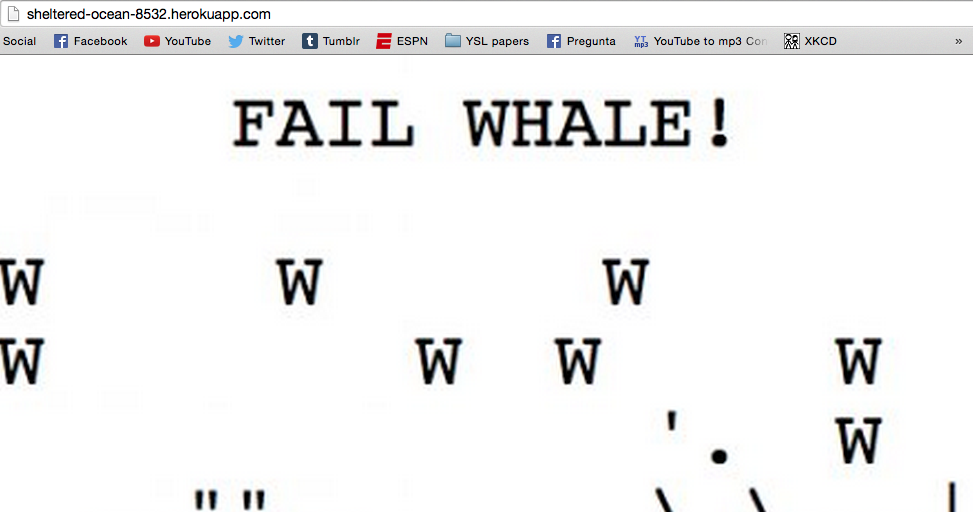

Analyst: Owen Martin on 24 April 2015
Security flaws are all over the place in web programming, and can lead to real concerns when an attacker can exploit these flaws to gain access to private information. This assessment looks to identify these flaws, and provide suggestions for improvement, within the Marauder's Map web application. The locations app that I was assigned to was created by Maggie Chapman and can be found here.
There are a bunch of possible vulnerabilities due to the specifications of the locations app. Primarily, there is no authentication required, so any random user can submit any random string as a login and any random integers as a latitude and longitude, which is both a functionality problem and a security hazard because it relies on user input.
To begin testing, I pretended to be an assailant and initially only performed "black-box" attacks - those that don't have access to the source code that Maggie provided for me - but I eventually looked at her work in more depth to expose other problems. I use the terminal command curl to carry out my onslaught.
My findings can be summed up in a few simple words: NEVER TRUST USER INPUT! Code that neglects to assert user correctness is always going to be vulnerable to a nefarious user that could submit data containing formatting that is designed to break the web application. The code that I assessed failed to deal with user input that included script or style tags.
Cross-Cross-Site Scripting (XSS)
|  |
script code. This escaping can be done by filtering the input through a list of allowable characters, and resticting dangerous things line '<', '>', etc..Submitting large input causes the server to break
I was only able to find two notable security flaws.
While this Marauder's Map web application boasts only a pair of easily identifiable security faults, the severity of these issues makes it very simple to turn a functioning web application into a useless page that displays ASCII art in fun shapes. If the recommendations provided in section IV are followed, the security of the application should be ensured.